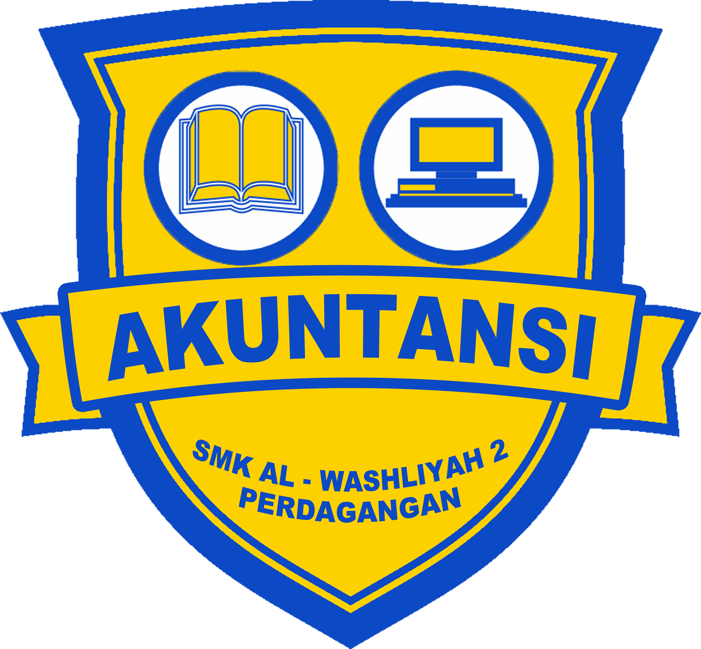
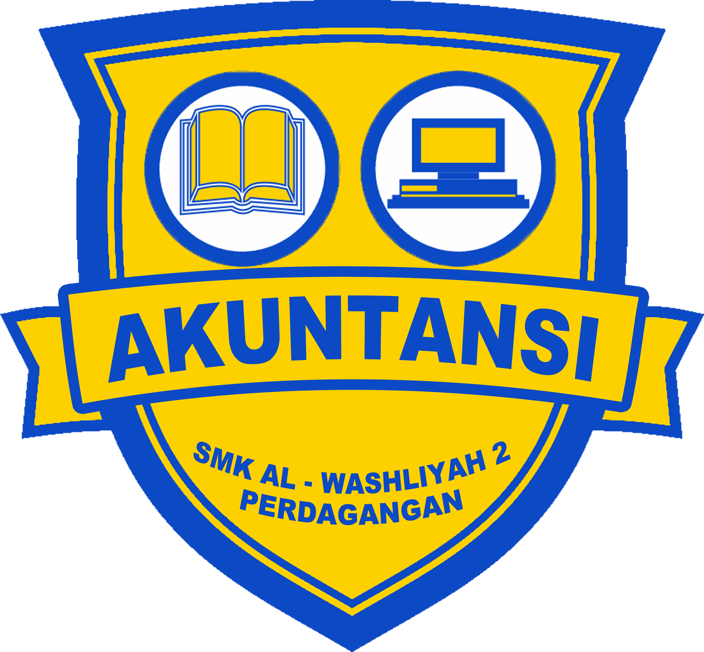

LK
Pelayanan kesehatan atau perawatan kesehatan (bahasa Inggris: health care) adalah pemeliharaan atau peningkatan status kesehatan melalui usaha-usaha pencegahan, diagnosis, terapi, pemulihan, atau penyembuhan penyakit, cedera, serta gangguan fisik dan mental lainnya. Pelayanan kesehatan diberikan secara profesional oleh tenaga kesehatan dan tenaga pendukung kesehatan, misalnya dokter, dokter gigi, perawat, bidan, apoteker, beserta asisten-asistennya. Kegiatan pelayanan kesehatan diberikan di fasilitas kesehatan primer, sekunder, tersier, serta mencakup kesehatan masyarakat.
OTKP
Otomasi Tata Kelola Kantor (OTKP) Office Automation and Governance adalah jurusan yang erat kaitannya dengan korespondensi dan komunikasi. Jurusan Otomasi Administrasi Perkantoran atau OTKP merupakan program unggulan di SMK TRIMULIA. Program OTKP memiliki visi dan misi departemen: Visi: Mendidik manusia yang bertakwa kepada Allah SWT, berbudi luhur, berakhlak mulia, berilmu, cerdas, kreatif dan inovatif, berkepribadian, berkarakter serta memiliki kemampuan dan keterampilan profesional. Misi: Menghasilkan lulusan yang kompeten, Meningkatkan kerjasama dengan DU/DI dalam rangka praktik kerja dan penempatan magang bahkan di dunia kerja yang lebih luas.
TF
Teknologi Farmasi adalah keilmuan yang lebih berorientasi pada pengembangan produk kefarmasian. teknologi farmasi mengkaji berbagai aspek-aspek yang berkaitan dengan ”sediaan farmasi” mulai dari pencarian hingga pembuatan, pengembangan bahan baku sampai menjadi sediaan farmasi yang siap digunakan, seperti obat-obatan, jamu atau produk kosmetika[1].
AKL
Secara umum, akuntansi adalah suatu proses mencatat, meringkas, mengklasifikasikan, mengolah, dan menyajikan data transaksi, serta berbagai aktivitas yang berhubungan dengan keuangan, sehingga informasi tersebut dapat digunakan oleh seseorang yang ahli di bidangnya dan menjadi bahan untuk mengambil suatu keputusan.
AXIO
Axioo (ditulis axioo) adalah salah satu perusahaan elektronik di Indonesia yang memproduksi atau menyediakan komputer, laptop, ponsel cerdas, komputer tablet, dan sebagainya.


 
